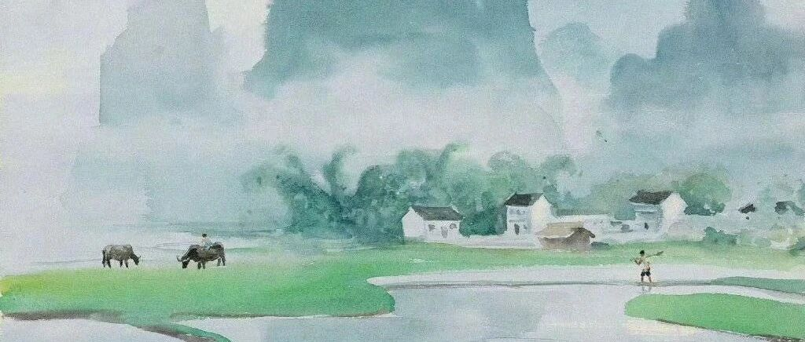

我的钱，终于越花越多了！
点击关注 秋秋在分享
一起实现财务自由退休
大家好，我是秋秋呀。
很多人会担心财务自由后消费欲望大增，最终走到穷困潦倒的地步。
今天就聊聊我钱越花越多的经历。
也许能给你一颗定心丸，也许不适合你，切忌削足适履。
我，主要是买黄金，买了很多。
最开始年龄小，也不是冲投资去的，只想给自己添置几件首饰。
买了平安锁、手镯，觉得寓意很好。

然后开始买各种转运珠、hello Kitty三丽欧卡通的项链。
说真的，现在我看到这些还是很开心！我就是喜欢这些可爱的东西！


我喜欢三丽欧喜欢迪士尼，喜欢各种卡通，这个爱好也被我转移到黄金上面了。
那喜欢手办的也可以换成黄金的，喜欢模型的，黄金各种造型都有。

后面我就长大了几岁，也没太大，27岁之后吧，就开始买一些花朵蝴蝶 新中式图案的金饰。
这块大家也可以用Ai算一算自己的命理，我是五行喜金水，黄金白水晶黑曜石适合我。


反正都是花钱，那就图个好彩头。
提前退休后，我是没和自己的消费欲抗衡过。
大多数时候，我这种 i 人不太需要社交，喜欢大自然和运动。
所以真有喜欢要花钱的地方，只要在我每月1万利息覆盖的范围内，我一点都不难为自己。
花了。
开心就行。
后面我就是买金条和金元宝了。

还有黄金ETF，我是今年年初开始入的，现在收益率10%左右吧。

那为什么买黄金，钱越花越多了？
我们初中政治就学过，金银天然是货币，我给大老王开玩笑说：在家是首饰，出门是盘缠。
国家货币的发行，是要有相应的黄金储备作为支撑。
你可以理解为虽然我们手中交易的是钱，本质上是黄金。
黄金也是最稀有的元素，工业上很少使用，但是它的稳定性和稀有性决定了它的不可替代。
这么说，就算它不是货币，也是有“使用价值”的。

不过，你要是投资黄金，也不是稳赚不赔的。
2013-2015年，金价就累计下跌42%，长期看好，短期震荡很正常。
最后，说说我的购买方式吧，也是适合新手的渠道。
1.实物黄金
金条/金首饰
选择标准：有999证书的，首饰工费在20以内，金条工费10以内的，只要足金，没必要非看大牌首饰店。
我会选择厂家，比如水贝那种直接拿货。
小秘密:大牌也是从我知道的厂家订货。

优点：可以戴，可以存。 我目前的主要方式，每年都会稳定买。
贵了少买，便宜了多买。
2. 纸黄金
银行交易，可以直接在建行、工行去买。
- 优势：无实物交割，1元起投，24小时交易，很多可以兑换实物。
- 风险：会有点差约0.8元/克，如果单边行情易被套
3. 黄金ETF
在支付宝或者券商买基金。
产品有华安黄金ETF（518880）、博时黄金ETF（159937）。
选择跟踪误差<0.5%的。
这个注意有管理费，差不多0.6%，有的不能兑换实物。
4.黄金期货
这个有风险，不建议新手。
入手黄金首先要看自己需求。
我是以佩戴和稳健为主，就是实物黄金和黄金ETF定投。
同时建议大家目标止盈，比如年化收益率达8-10%（黄金长期年化回报约6%）就可以收手。
我是会定期去回收掉黄金，像400多买的都卖的差不多了。

逢低我会再买入。
我对黄金的感触就是，有购物欲的时候入手当首饰，好看就行。
不喜欢了，还能回收。不至于像钛钢的那种不喜欢了断舍离。
情绪运势不好的时候当好物，增强气运。我是觉得金灿灿的很喜庆。
想投资的时候就当储备，做好布局把控，收益也不错。
据说在古代女性地位低，家产都是分不到的，只有自己的黄金首饰这些才属于她们。
现在女性地位高了，但是很多聪明的女孩子还会存点黄金，因为即使离婚也属于个人财产，也是安全感吧。